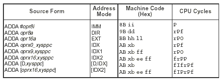

| Previous Section | Next Section | Index | Questions | Search the Text |
It is often important to know the exact execution times of instructions. The instruction execution time is expressed in terms of CPU Cycles, which are the same as a basic memory clock cycle. A memory clock cycle is the time to read or write a memory location, and is 1/24 microseconds in the Dragon12-Plus system. It can be as little as 40ns and still meet the specifications of the HCS12 part. Earlier 68HC12 microcontrollers took 125ns. Timing information is provided at the bottom of the instruction descriptions in the S12CPUV2 Reference Manual. Let's examine the table at the bottom of the description of the ADDA instruction (figure copied from the Reference Manual):

The execution time depends on the addressing mode used, and is calculated by counting the CPU Cycles shown. For instance, ADDA with an immediate mode operand takes a single clock cycle, P, while ADDA with an accumulator D indexed indirect mode operand takes 6 clock cycles, fIfrPf.
However, it is also important to know what memory accesses are taking place during an instruction. Accessing the internal EEPROM or Flash memory as a word reference on an odd address takes an additional memory reference because it must be accomplished as two byte memory references. Accessing external RAM or ROM can take additional time. An external word reference that is not at an even address takes an additional memory reference for the same reason as the internal reference. If the external memory is 8 bits wide then all word references take the additional memory reference since all references must be done as two byte references. In addition, most memory cannot run at the speed required for quickest access by the processor. For this reason, the clock is often "stretched" to allow additional time. In the Dragon12-Plus board, the microcontroller uses only on-chip memory, so no additional time is taken. Details of memory referencing will be described in the section on External Memory/Peripheral Interfacing.
Instructions are always fetched as words from even memory locations. The access detail character P indicates the fetch of an instruction word. The letter O indicates an optional fetch. Instructions that are three bytes long have one cycle of P and one of O. The optional fetch is necessary to fill the instruction queue on average half the time, namely when the first byte of the instruction is not at an even address. The letter f indicates a free clock cycle where there is no memory reference. r and R are 8 and 16 bit data reads, while w and W are 8 and 16 bit data writes. I is an indirect pointer fetch, which behaves like a 16 bit data read. The Users Guide lists other access detail characters that exist, but these are the primary ones. Instruction timing can be calculated by using this information, and knowing the memory being accessed. For example, the instruction ADDA 100,X is a 9 bit constant index operand instruction, the 5th line in the chart. It shows three clock cycles of types rPO. Assuming a one clock "stretch" for all external memory references, we have eight possible conditions:
If the external memory is 8 bit, then there will be additional time for instruction fetches in external memory, two extra clocks for each one that takes place, so in the worst case the instruction would take 10 clocks. The best case time is 3 clocks.
Continue with Load, Store, and Move Instructions.
Return to the Index.